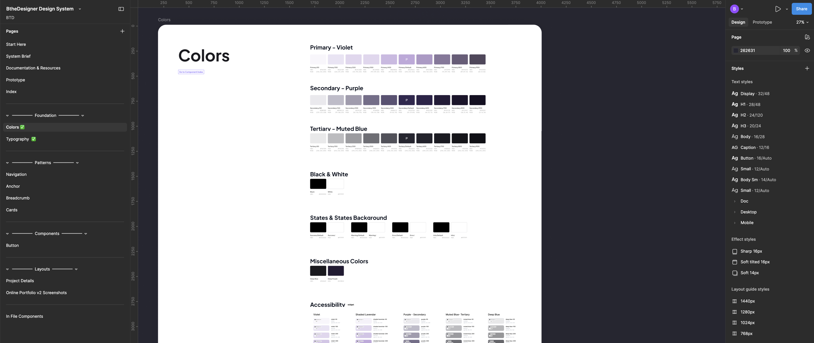

There's something quietly humbling about being a designer who has to design for themselves. I've built systems for products. But sitting down to build a system for my own brand felt different. Exposed, almost. Because there's no brief to hide behind. No stakeholder to align with. Just me, deciding what I believe about design — and then making it visible.
- Logo:
- The logo needed to signal creative authority without announcing itself too loudly. The hexagon carries the hive reference but it's structural, not cute. The drip mark is expressive, humanizing the geometry. The cursor arrow is pointed, intentional. Together, they say: this is someone who builds things on purpose.
- Color System:
- The color system got its own logic. Purple leads because it carries creativity and innovation. Gold shows up as energy. White is clarity, the surface everything sits on. And the neutrals — the mauves and warm grays — are the load-bearing walls. They're the colors you don't notice until they're wrong.
- Typography:
- Typography became about structured warmth, two words that shouldn't belong together, but do. The display weight brings authority. The lighter weights bring approachability. The goal was a voice that reads confident but never cold.
How I used AI in this process
How I used AI in this process
I used AI throughout this day but not the way people assume when they hear that.
I didn't hand it a prompt and accept what came back. I used it the way I'd use a sharp collaborator who has broad knowledge but no context about me. I had to bring the context. I had to know enough to direct it, challenge it, and filter what it gave me.
When I was pressure-testing my color decisions, I used AI to cross-reference color psychology, accessibility contrast ratios, and how comparable personal brands in the design space use color intentionally. It gave me a faster surface area to work from. But the decisions about what purple means in the context of B the Designer, why gold is the signal and not the structure, those came from me.
When I was working through typography logic, I used AI to think through pairing rationale and weight hierarchy. It surfaced options I might have spent hours researching. But "structured warmth" as a concept? That came from sitting with the question of what I actually want people to feel when they read my work.
That's the distinction I want to be clear about: AI accelerated my research and expanded my option space. My design judgment closed the loop.
There's a version of this process where someone uses AI to skip the thinking. That produces work that looks complete but has no real point of view underneath it. I used it to get to the thinking faster and then I did the thinking.
For any designer building a system right now, I'd suggest treating AI the way you'd treat a very well-read junior collaborator. Brief it well. Push back on it. Extract what's useful. Own the synthesis.
That's the skill. Not the prompting. The judgment that comes after.
What I'm understanding now is that brand identity isn't just the visual layer that goes on top of a design system. It's the decision framework that makes every component choice defensible. Without it, you're just building atoms with no periodic table.
don't be a stranger!
Let's collaborate and create something amazing!